InfraTwin
Robotics and AI for Automated Digital Twinning of Buildings and Infrastructure
From physical infrastructure to engineering intelligence.
A connected workflow from robotic reality capture to AI-assisted digital twins — developed at NUS College of Design and Engineering.
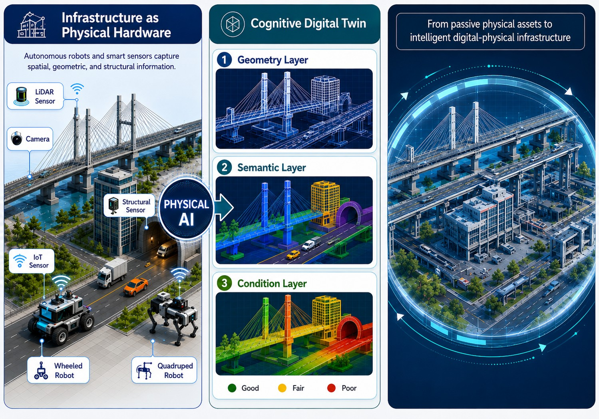
All Rights ReservedWhere and how time and money are lost
Ageing infrastructure assets, climate hazards and limited AEC industry capacity are converging into one problem for smart cities. Building and infrastructure owners need to survey the site, capture complete and up-to-date as-built conditions, and convert the captured data into usable digital records. This process faces two key bottlenecks.
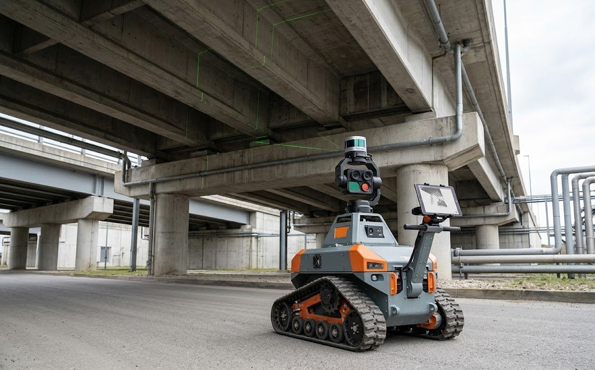
AI-generatedReality Capture
Capture 3D geometric data (such as point clouds) and updated as-built conditions (RGB / thermal imagery) for infrastructure.
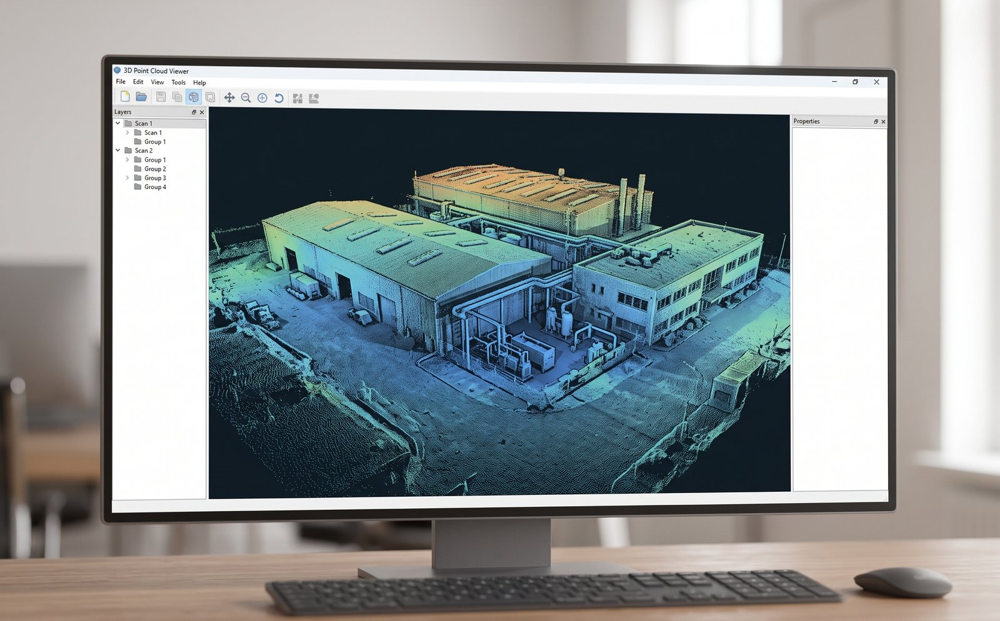
AI-generatedIncomplete Coverage
Achieving complete, reliable scan coverage across complex infrastructure is highly time-demanding. Incomplete coverage means missing regions, unreliable records, and repeated site visits.
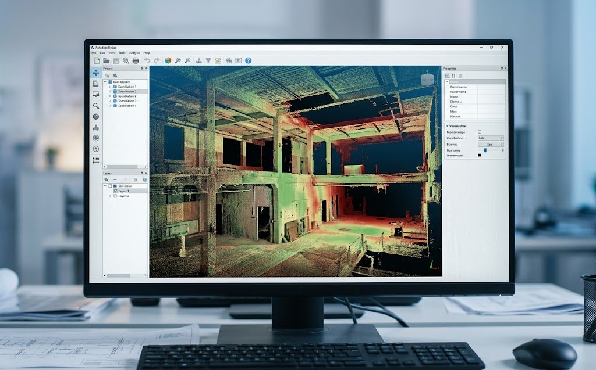
AI-generatedDigital Twinning
Captured data (e.g. point clouds) is processed manually by specialised experts to convert it into usable digital records and engineering 3D models for maintenance planning.
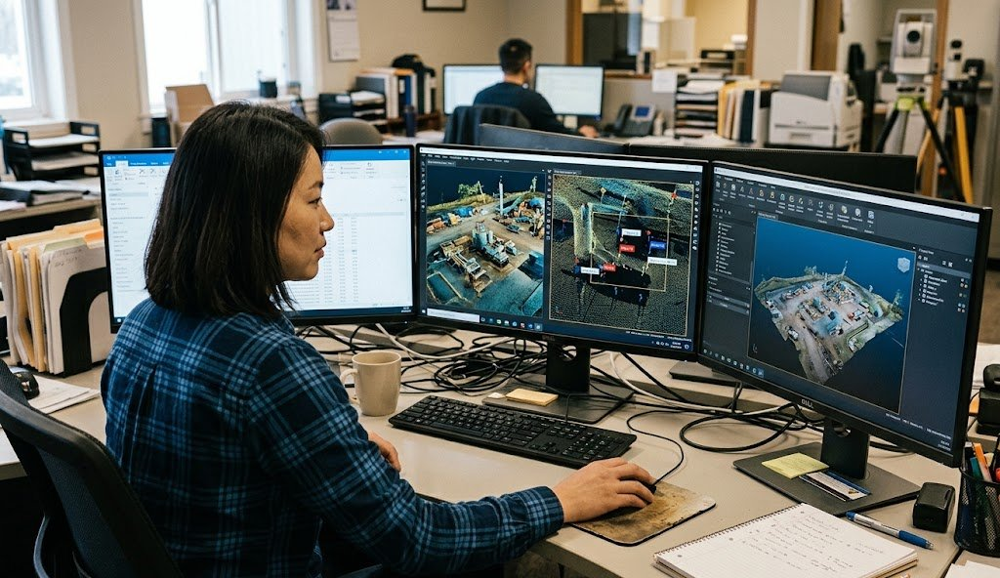
AI-generatedManual Intervention
Cleaning, annotating and converting survey data into usable digital records still requires substantial specialist effort — accuracy and processing efficiency of existing semi-automated tools remain limited.
InfraTwin closes the loop
A connected workflow from robotic capture to AI-assisted digital twins.
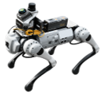
All Rights ReservedInfra.SENSE
Identifies insufficiently scanned regions early and guides specialists/robots to capture more complete infrastructure data.
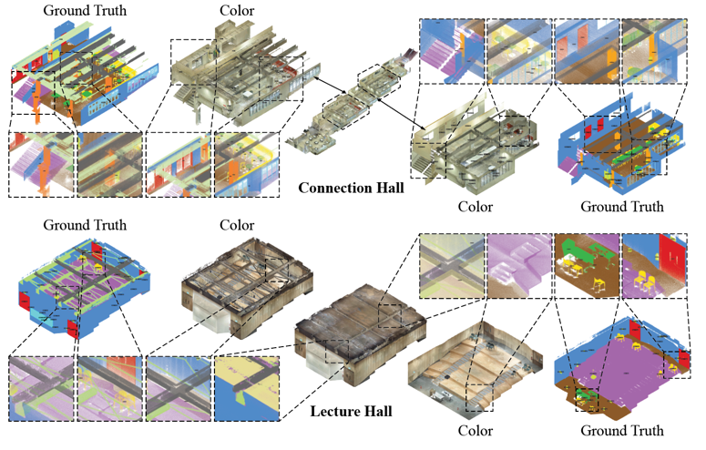
All Rights ReservedInfra.SEG
Automatically segments point clouds into structural, M&E and infrastructure components.
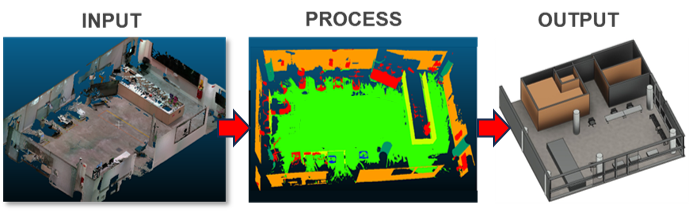
All Rights ReservedInfra.DT
Reconstructs IFC-compatible engineering digital twins for asset management.
Infra.SENSE: Robots that know where to scan
The robot is not only a mobile scanner; it reasons about visibility, occlusion and scan coverage.
In complex infrastructure, surfaces are occluded, corridors are narrow, and the best viewpoint isn't always obvious. InfraTwin's sensor perception model predicts visibility and scan coverage before the robot moves, then selects viewpoints and trajectories that improve the final point cloud.
Commercial meaning: fewer return visits, fewer missing areas, and more complete infrastructure records.
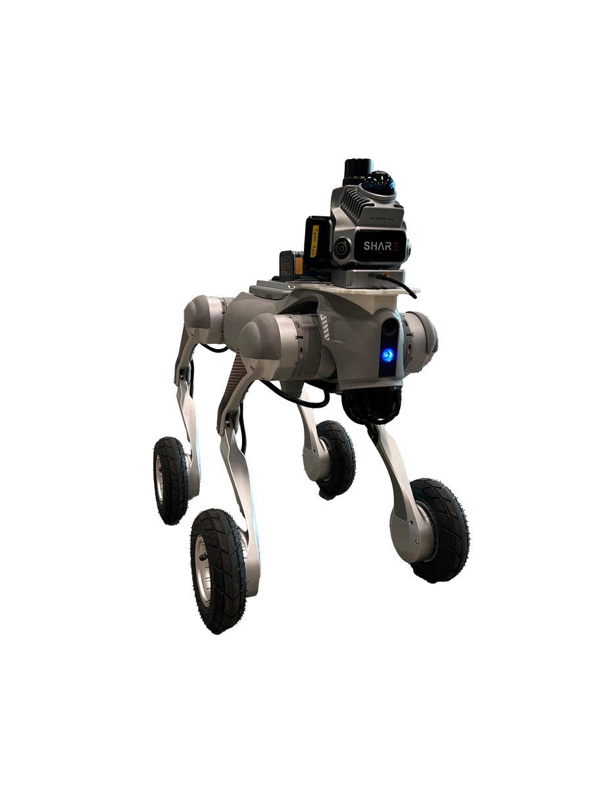
All Rights Reserved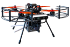
All Rights Reserved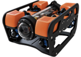
All Rights Reserved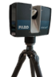
All Rights ReservedInfra.SEG: Raw scans become engineering digital twins
The platform turns point clouds into segmented components and reconstructed BIM objects.
Infra.SEG uses BIM-generated synthetic point clouds, weak supervision and vision foundation models to reduce annotation effort — adapting segmentation across industrial facilities, bridges, transport assets and complex M&E systems, without depending on manually labelling every new site from scratch.
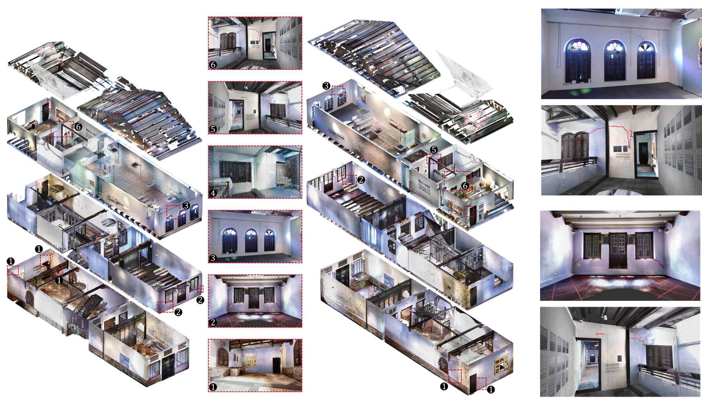
All Rights ReservedInfra.DT: Segmented components become IFC-compatible digital twins
Infra.DT moves from raw scan data to object-level information, ready for engineering and asset-management workflows.
For transport infrastructure, the system identifies structural and M&E components — beams, columns, ducts, pipes, equipment — from LiDAR point clouds and reconstructs them into IFC-compatible BIM. The same underlying segmentation-to-reconstruction pipeline extends to condition and defect assessment, shown here on a real heritage building survey — carrying labelled components through to fine-grained surface and structural condition detection.
See InfraTwin in action
College of Design and Engineering, National University of Singapore
PhD research in robotics and AI for automated infrastructure digital twinning — developing InfraTwin's capture-to-digital-twin pipeline, including 3D scene understanding and the NUS3D point-cloud dataset.
Master's research: Research Assistant, Solar Energy Research Institute of Singapore (SERIS), Mar 2024–Jan 2025 — BIPV integration onto heritage buildings, with NHB & NUS Baba House Museum.
Design training: MArch, National University of Singapore (2023–2025). BArch, Chongqing University (2020–2023).
Speaker, EEHB 2024 (5th International Conference on Energy Efficiency in Historic Buildings, ICOMOS Singapore). Presenter, 43rd ISARC / 34th IGLC, Singapore 2026.
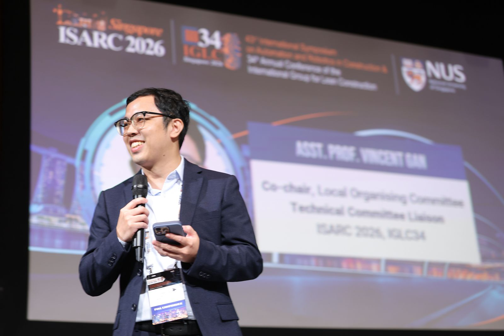
- Assistant Professor, National University of Singapore, Singapore (09.2020 – present)
- Member, Institute of Electrical and Electronics Engineers (IEEE), US (10.2024 – present)
- Member, American Society of Civil Engineers (ASCE), US (01.2019 – present)
Second Runner-Up, NUS CDE Impact Accelerator Challenge (2024) — Scan2BIM: robotic scanning for automated 3D digital reconstruction.